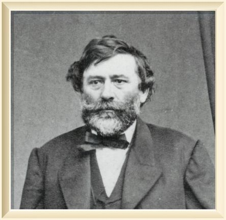

Our story starts...
The humble beginnings of Coosper's Winery can be traced back to the legend known as the "Father of Wine", the nobleman, adventurer, traveller, writer and many more: Agoston Haraszty.
In America he's known for introducing more than 300 varieties of European grapes to California. One of the first men to plant vineyards in Wisconsin, he was the founder of the Buena Vista Winery in Sonoma, California, and an early writer on California wine and viticulture.
On the east side of the Wisconsin River, in what became the Town of Roxbury, Haraszthy planted grapes and dug wine cellars into hillside slopes above the river. The cellars and slopes are today home to the Lake Wisconsin AVA and the Wollersheim Winery, the second oldest winery in the United States, after the Brotherhood Winery in Washingtonville, New York in one of Wisconsin's best-known wine producing regions.
Coosper's Winery very much admires Agoston and tries to keep his methods of winemaking alive even today, teaching them to a new generation of people.
The story continues...
Since then the founder of Coosper's Winery: Kacper Marszelewski has took it upon himself to introduce a whole new generation of people to the art of wine-making.
He built Coosper's Winery up from the ground while still studying in college.
Since then Coosper's Winery has been featured in various media, including the Discovery Channel and the Travel Channel. The winery has won numerous awards for their wines and Kacper himself is a sought-after lecturer on the subject of wine.
Kacper has now taken a back seat with his business, only checking up on it periodically as he has now gone back to college and is pursuing a degree in IT. Not satisfied with being limited to a single venture.
And now we are here...
Today, Coosper's Winery aims to teach people the joy of wine making. Classes can be taken in different varieties of wines, along with the history and culture of the grape.
Everyone is welcome no matter what your experience level. My website is for everyone from new beginners to professional winery and vineyard owners.
To learn more about wine making browse this website for in depth articles. Whether you decide to make wine or not: I hope that this website proves to be an important resource in your search for wine making knowledge.
Attempting a recipe or making wine gives you a sense of accomplishment each and every time you try a new recipe or step into the winemaking business, thus we hope that eventually you'll feel inspired to start your own business.